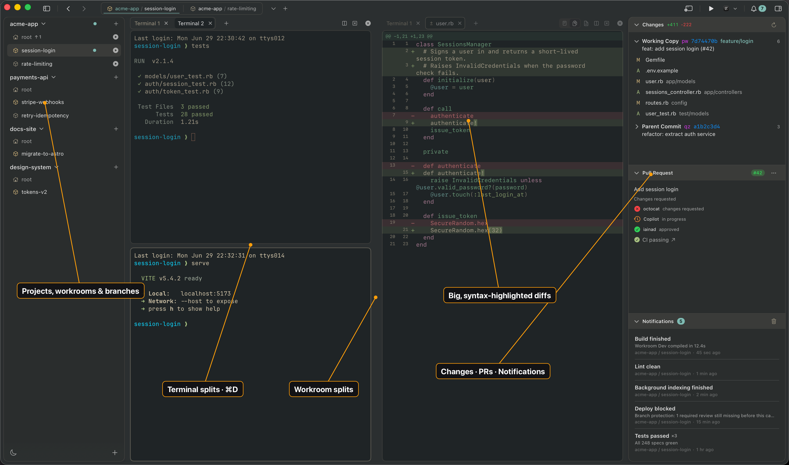

A / SIGNAL RAIL
One strong edge.
A yellow top rail and a nearly invisible perimeter. It keeps the broadcast language while removing the extra chrome and checker noise.
Recommended
B / CORNER LOCK
Frame only the corners.
Four cyan registration marks hold the screenshot in place. There is no surrounding panel, so the app reads larger and more immediate.
C / BLUE MATTE
Give it a quiet field.
A solid channel-blue matte creates contrast and a little depth without shadow, pattern, or extra interface decoration.
PRODUCT VIEW01